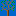
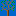

Guide to the Wind Shade Calculator

Even
if you do not have a Netscape 3 or Internet Explorer 4 browser, this page
will give you a lot of useful knowledge on how obstacles affect the energy
in the wind.
The calculator will quickly give you the result at hub height at the distance from the obstacle you specify. If you use the plot facility, your computer will also calculate 620 different measurement points at different heights and distances from your obstacle.
Turbine
Hub Height
The higher you are above the top of the obstacle, the less wind shade. The
wind shade, however, may extend to up to five times the height of the obstacle
at a certain distance.
 If the obstacle is taller than half the hub height, the results are
more uncertain, because the detailed geometry of the obstacle, (e.g. differing
slopes of the roof on buildings) will affect the result. In that case the
programme will put a warning in the text box below the results.
If the obstacle is taller than half the hub height, the results are
more uncertain, because the detailed geometry of the obstacle, (e.g. differing
slopes of the roof on buildings) will affect the result. In that case the
programme will put a warning in the text box below the results.
Distance
Between Obstacle and Turbine
The distance between the obstacle and the turbine is very important for
the shelter effect. In general, the shelter effect will decrease as you
move away from the obstacle, just like a smoke plume becomes diluted as
you move away from a smokestack. In terrain with very low roughness (e.g.
water surfaces) the effect of obstacles (e.g. an island) may be measurable
up to 20 km away from the obstacle.
 If the turbine is closer to the obstacle than five times the obstacle
height, the results will be more uncertain, because they will depend on
the exact geometry of the obstacle. In that case the programme will put
a warning in the text box below the results.
If the turbine is closer to the obstacle than five times the obstacle
height, the results will be more uncertain, because they will depend on
the exact geometry of the obstacle. In that case the programme will put
a warning in the text box below the results.
Roughness
Length or Roughness Class
The roughness of the terrain between the obstacle
and the wind turbine has an important influence on how much the shelter
effect is felt. Terrain with low roughness will allow the wind passing outside
the obstacle to mix more easily in the wake behind
the obstacle, so that it makes the wind shade relatively less important.
 It may be a bit confusing at first, that we both deal with the roughness
of the terrain, and with individual obstacles. A good rule of thumb is that
we deal with individual obstacles which are closer than about 1000 metres
from the wind turbine in the prevailing wind directions. The rest we deal
with as changes in roughness classes.
It may be a bit confusing at first, that we both deal with the roughness
of the terrain, and with individual obstacles. A good rule of thumb is that
we deal with individual obstacles which are closer than about 1000 metres
from the wind turbine in the prevailing wind directions. The rest we deal
with as changes in roughness classes.
Obstacle
Height
The taller the obstacle, the larger the wind shade.
 As we have mentioned above, if the turbine is closer to the obstacle
than five times the obstacle height, or if the obstacle is taller than half
the hub height, the results will be more uncertain, because they will depend
on the exact geometry of the obstacle. In that case the programme will put
a warning in the text box below the results.
As we have mentioned above, if the turbine is closer to the obstacle
than five times the obstacle height, or if the obstacle is taller than half
the hub height, the results will be more uncertain, because they will depend
on the exact geometry of the obstacle. In that case the programme will put
a warning in the text box below the results.
Obstacle
Width
The obstacle calculation model works on the basis of the assumption that
obstacles are infinitely long, and that they are placed at a right angle
(perpendicular) to the wind direction.
 A very narrow object will of course cast a far smaller wind shade than
a large one. For practical reasons we assume that we investigate the horizon
around the wind turbine in twelve 30 degree sections.
A very narrow object will of course cast a far smaller wind shade than
a large one. For practical reasons we assume that we investigate the horizon
around the wind turbine in twelve 30 degree sections.
 At the bottom of the drawing on the right side of the wind
shade calculator we illustrate (in 10 per cent steps) how much space
the obstacle take up in such a 30 degree section. You may adjust the width
of the obstacle in 10 per cent steps by clicking on the squares at the bottom
of the graph.
At the bottom of the drawing on the right side of the wind
shade calculator we illustrate (in 10 per cent steps) how much space
the obstacle take up in such a 30 degree section. You may adjust the width
of the obstacle in 10 per cent steps by clicking on the squares at the bottom
of the graph.
 You may also type the exact length of the obstacle (as seen from the
wind turbine) directly, or you may enter the percentage of the sector width
that the object fills up.
You may also type the exact length of the obstacle (as seen from the
wind turbine) directly, or you may enter the percentage of the sector width
that the object fills up.
Porosity
 = 0%
= 0% =
30%
=
30%
 = 50%
= 50%  =
70%
 =
70%
A tree without leaves will brake the wind far less than a building. Trees
with dense foliage will have a braking effect somewhere in between. In general,
the wind shade will be proportional to (one minus the porosity of the obstacle).
 The porosity of an obstacle is
a percentage indication of how open an obstacle is, i.e. how easily the
wind can pass through it. A building obviously has a zero porosity. A group
of buildings with some space between them with have a porosity equal to
(the area of the open space) divided by (the total area of both buildings
and the open space in between, as seen from the wind turbine).
The porosity of an obstacle is
a percentage indication of how open an obstacle is, i.e. how easily the
wind can pass through it. A building obviously has a zero porosity. A group
of buildings with some space between them with have a porosity equal to
(the area of the open space) divided by (the total area of both buildings
and the open space in between, as seen from the wind turbine).
 You may either specify the porosity directly in the calculator, click
on one of the buttons with the symbols shown above, or use the pop up menu
for suggested settings for different objects.
You may either specify the porosity directly in the calculator, click
on one of the buttons with the symbols shown above, or use the pop up menu
for suggested settings for different objects.
Control
Buttons
Submit calculates your latest input. You may use the tab key or just
click outside the field you change instead.
 Plot Wind Speed gives you a graph and a table of the percentage
of the remaining wind speed at a number of heights and distances up to 1.5
times the height and distance of your wind turbine hub. The turbine tower
is shown in yellow. The calculations are quite complex, so be patient if
your computer is slow.
Plot Wind Speed gives you a graph and a table of the percentage
of the remaining wind speed at a number of heights and distances up to 1.5
times the height and distance of your wind turbine hub. The turbine tower
is shown in yellow. The calculations are quite complex, so be patient if
your computer is slow.
 Plot Wind Energy gives you a graph and a table of the percentage
of the remaining wind energy at a number of heights and distances up to
1.5 times the height and distance of your wind turbine hub. The turbine
tower is shown in yellow. The calculations are quite complex, so be patient
if your computer is slow.
Plot Wind Energy gives you a graph and a table of the percentage
of the remaining wind energy at a number of heights and distances up to
1.5 times the height and distance of your wind turbine hub. The turbine
tower is shown in yellow. The calculations are quite complex, so be patient
if your computer is slow.
 Plot Speed Profile gives you a plot of the wind speed profile
at different heights up to 100 m at the distance where you have placed your
turbine. You can see directly on the red curve how the obstacle makes the
wind speed drop. You can enter any wind speed you like for the hub height.
(The shape of the curve remains the same, which is should, since
obstacles cause a relative change in wind speed). The curve corresponds
to the curves drawn by the wind speed calculator.
Plot Speed Profile gives you a plot of the wind speed profile
at different heights up to 100 m at the distance where you have placed your
turbine. You can see directly on the red curve how the obstacle makes the
wind speed drop. You can enter any wind speed you like for the hub height.
(The shape of the curve remains the same, which is should, since
obstacles cause a relative change in wind speed). The curve corresponds
to the curves drawn by the wind speed calculator.
Results
The result line in the calculator tells you how many per cent the wind speed
will decline due to the presence of the obstacle. You may plot the change
in wind speeds for a number of distances and heights up to 1.5 times your
present distance and height by clicking the Plot Wind Speed button.
 (If you are working with a specific Weibull
distribution describing the wind in this particular sector, the change
in wind speed corresponds to a change in the scale factor A. If you use
the results of these calculations to find a Weibull distribution, you can
just adjust the scale factor, A, with this change. The shape factor, k,
remains unchanged. You will get to the Weibull distribution later in this
Guided Tour, when we explore how to compute the energy output from a wind
turbine).
(If you are working with a specific Weibull
distribution describing the wind in this particular sector, the change
in wind speed corresponds to a change in the scale factor A. If you use
the results of these calculations to find a Weibull distribution, you can
just adjust the scale factor, A, with this change. The shape factor, k,
remains unchanged. You will get to the Weibull distribution later in this
Guided Tour, when we explore how to compute the energy output from a wind
turbine).
 The result line also tells you the loss of wind energy due to the presence
of the obstacle. You may plot the change in wind energy for a number of
distances and heights up to 1.5 times your present distance and height by
clicking the Plot Wind Speed button.
The result line also tells you the loss of wind energy due to the presence
of the obstacle. You may plot the change in wind energy for a number of
distances and heights up to 1.5 times your present distance and height by
clicking the Plot Wind Speed button.
More
Complex Obstacle Calculations
Obstacles may not be perpendicular to the centreline in the sector, and
there may be several rows of obstacles. Although you can still use the basic
methods in the calculator, you would probably want to use a professional
wind assessment programme such as WindPro®
or WAsP® to manage your data
in such cases.
 The methods used in the wind calculator are based on the
European Wind Atlas. If you read chapter 8, however, you should note that
there is a misprint in formula 8.25.
The methods used in the wind calculator are based on the
European Wind Atlas. If you read chapter 8, however, you should note that
there is a misprint in formula 8.25.

|
Back | Home |
Forward |
© Copyright 1998 Soren Krohn. All rights reserved.
Updated 12 August 2000
http://www.windpower.org/tour/wres/shelter/guides.htm